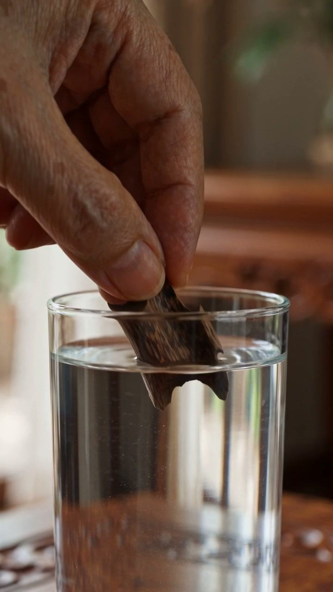

沉香的木质本身密度小于水，沉水是因为油脂积累多了，整体密度超过了水。油脂越多、越密，越容易沉。所以沉水确实和油脂含量有关，但只是相关，不是等同。
天然沉香按密度分三档：沉水（全沉）、沉水浮（半沉半浮）、浮水。很多好沉香是沉水浮，香韵、油脂都不差，只是不沉。
压缩料、注胶料、注油料都能沉水，因为胶和重油的密度本来就大。拿沉水当唯一标准，等于给造假开绿灯。
反过来，浮水也不等于假。白木香、轻油料、新结香的料很多都是浮水，香韵清雅，适合入门和日常品香。
密度是参考指标之一，要和成分、构造、证书一起看。正确的使用方式是：先确认是真的（成分 + 构造 + 证书），再用密度辅助判断油脂丰富程度和等级。
LY/T 3223-2020《沉香质量分级》里，密度是分级指标之一，但不是唯一指标。分级还要综合醇浸出物、挥发油、沉香四醇。
| 状态 | 说明 | 能不能说明真假 |
|---|---|---|
| 沉水 | 密度大于水，油脂丰富 | 不能，压缩注胶也能沉 |
| 沉水浮 | 半沉半浮，油脂中等 | 不能，很多好料是沉水浮 |
| 浮水 | 密度小于水，油脂较少 | 不能，轻油料、新料多浮水 |